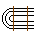
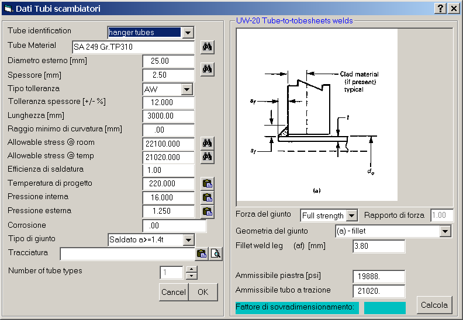

La 'membratura' Tubi di scambio deve essere intesa come il set completo dei tubi scambiatori. Di conseguenza, in ogni apparecchio si può inserire una sola membratura 'Tubi di scambio'. Questa è l'icona che rappresenta la membratura nel 
La finestra dei dati è costituita da due pannelli; il pannello di destra, relativo alla verifica della saldatura tubo-piastra, appare solo se il tipo di giunto è saldato di forza.

Questo dato viene utilizzato nel calcolo della pressione critica esterna. Nel caso di tubi a U è corretto quindi inserire la lunghezza totale sviluppata, anche se, per grandi valori del rapporto lunghezza diametro, il risultato diviene insensibile al valore della lunghezza.
Questo dato è utilizzato nell'applicazione di RCB-2.31 U-BEND REQUIREMENTS. Nel caso di tubi diritti questo valore può essere lasciato pari a zero.
I tipi di giunzione tubo-piastra sono quelli previsti dall'App. A, e vengono specificati al fine di calcolare lo sforzo ammissibile di trazione-compressione sul giunto tubo-piastra, in particolare ai fini delle verifiche sui carichi sui tubi dei fasci tubieri a teste fisse (vedi calcolo delle piastre tubiere):
Il tipo di mandrinatura applicato contestualmente alla brasatura o alla saldatura di tenuta sarà specificato al momento del calcolo dello sforzo ammissibile sul giunto.
Questa casella riporta, se esistente, il nome ed il percorso completo del file di input al programma Traccia per l'elaborazione della tracciatura della piastra tubiera dell'apparecchio allo studio. Poiché non si può scrivere nulla in questa casella, il dato è visualizzato a scopo informativo.
Esso permette di riportare nella finestra i dati relativi ai tubi contenuti nel file di input al programma Traccia
Esso permette di richiamare il programma Traccia, allo scopo di elaborare o modificare la tracciatura.
Nel caso di fasci tubieri con tubi di diametro/spessore/materiale dissimili, è possibile selezionare fino a tre tipi di tipi di tubo. Per ciascuno di essi saranno eseguite separatamente le verifiche a pressione interna ed esterna. Nel caso (improbabile) di un fascio a teste fisse, bisognerà porre attenzione a specificare nel pannello dei dati generali della Piastra Tubiera degli opportuni dati mediati.
Questo pulsante lancia il calcolo delle dimensioni minime ammissibili del giunto saldato secondo i parametri impostati.
I tipi di giunto 'full strength' e 'partial strength' sono definiti in UW-20. Si può sintetizzare dicendo che la saldatura dei giunti 'full strength' è dimensionata in modo da essere almeno altrettanto resistente quanto la sezione retta del tubo in parte corrente. Il progettista può scegliere, per ragioni di fattibilità/costo, una soluzione 'partial strength' tutte le volte che non ha necessità, a fronte dei carichi reali applicati, di sfruttare tutta la resistenza del tubo.
Trattasi del rapporto tra il carico ammissibile del giunto saldato e il carico ammissibile del tubo in parte corrente. Esso sarà pari ad uno per i giunti 'full strength'. Se l'App. A è applicabile al progetto in elaborazione, il rapporto di forza non dovrebbe essere superiore a quello specificato come parametro 'fr' nella detta appendice. Questa regola non è automatizzata in AmeVip, e viene quindi lasciata sotto la responsabilità del progettista.
La saldatura tubo-piastra può essere fillet, groove, o una combinazione di entrambi.
L'ammissibile del materiale della piastra tubiera viene assegnato nella finestra dei dati della stessa. Se la piastra tubiera è già stata definita prima dei tubi di scambio, il programma presenta come dato iniziale in questa casella l'ammissibile del materiale già definito. Esso può però esssere qui cambiato (senza naturalmente influenzare l'ammissibile piastra applicabile alle verifiche di quella membratura) per coprire il caso di piastre con placcatura o nastratura, nel qual caso l'ammissibile qui applicabile è quello del materiale riportato.